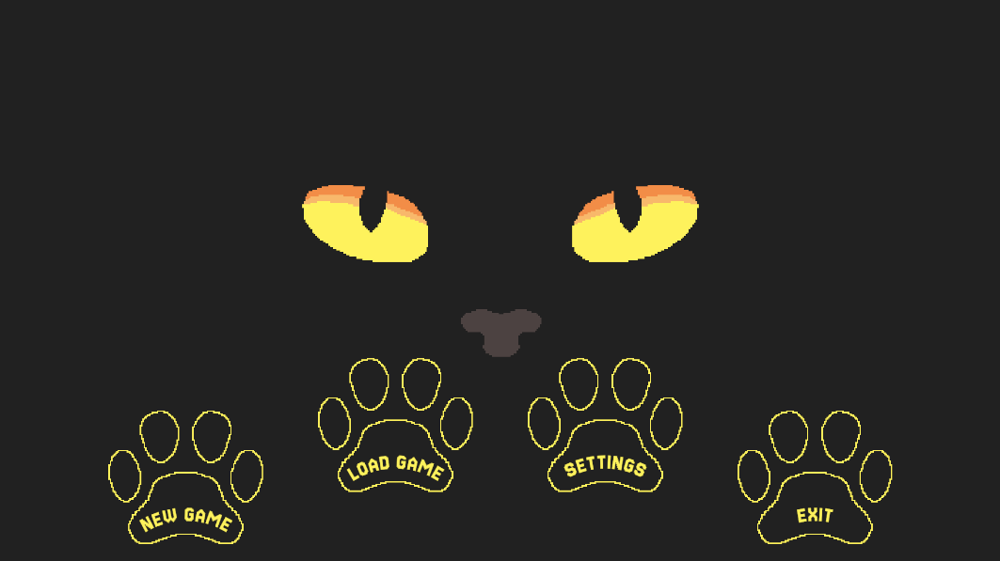
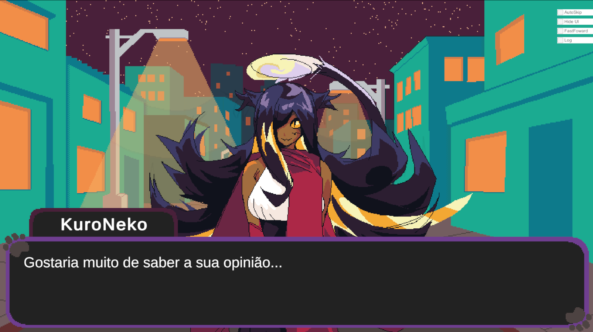
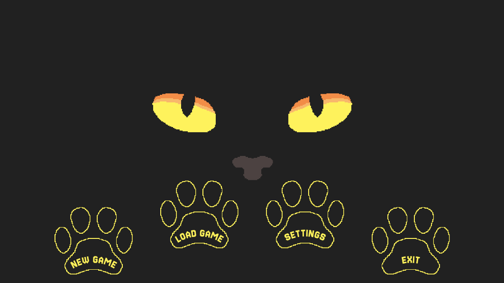
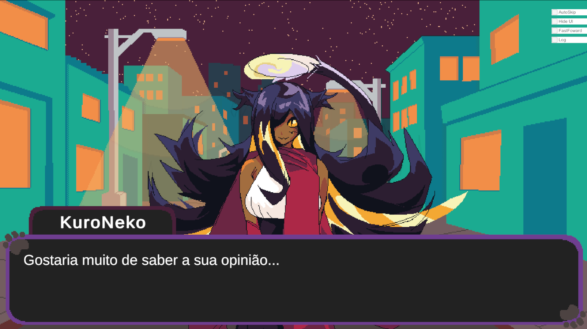

Lucas Vinicius de Santana Antonino
Game Developer | Unity & Unreal Engine
Sobre Mim
Sou desenvolvedor de jogos com foco em programação de gameplay, sistemas e mecânicas, atuando com Unity e Unreal Engine 5. Tenho experiência prática em C#, Blueprints e C++, sempre buscando equilibrar performance, jogabilidade e impacto visual.
Possuo 1 jogo publicado na Steam e outros em desenvolvimento, participando ativamente de todas as etapas de produção, desde prototipagem até polimento final.
Portfólio de Jogos
.png) 



🏆 Steam Veins (Publicado na Steam)
Jogo desenvolvido em equipe na Kimu Studios, lançado oficialmente na Steam.
- Programação de sistemas de gameplay
- Implementação de mecânicas principais
- Efeitos visuais e funcionalidades gerais
- Trabalho focado em qualidade e performance
🦖 Dino Girls (Em desenvolvimento)
Projeto em desenvolvimento com publicação prevista na Steam, no qual participo ativamente da produção.
- Participação no desenvolvimento de gameplay
- Criação e integração de sistemas
- Colaboração em decisões técnicas e criativas
🐱 KuroNeko (Visual Novel • Projeto Solo)
Visual Novel desenvolvida como projeto solo, utilizando Unity. Todo o sistema de parser narrativo foi programado em C#, permitindo controle de diálogos, escolhas, fluxo de cenas e eventos.
- Desenvolvimento completo do projeto (solo)
- Criação de sistema de parser narrativo em C#
- Integração do parser com Unity
- Implementação de sistemas de escolha e progressão
🌌 MidNight Memories (Projeto Solo)
Jogo FPS estilo Doom/PSX desenvolvido de forma independente em Unreal Engine, com foco em atmosfera, narrativa enigmática e gameplay clássico.
- Desenvolvimento completo do projeto (solo)
- Programação de movimentação e combate
- Sistemas de gameplay e UI
- Design técnico e implementação geral
Artes
Conhecimentos & Formação
🎓 Bacharelado
Bacharelado em Tecnologia da Informação – UFRN
🎮 Game Design
Curso de Game Design – Udemy
🗄️ Banco de Dados
Curso de Administrador de Banco de Dados – IFRS
Contato & Links
- 💻 GitHub: github.com/Thequing
- 🔗 LinkedIn: linkedin.com/in/lucas-antonino
- ✉️ Email: lvantonino@hotmail.com